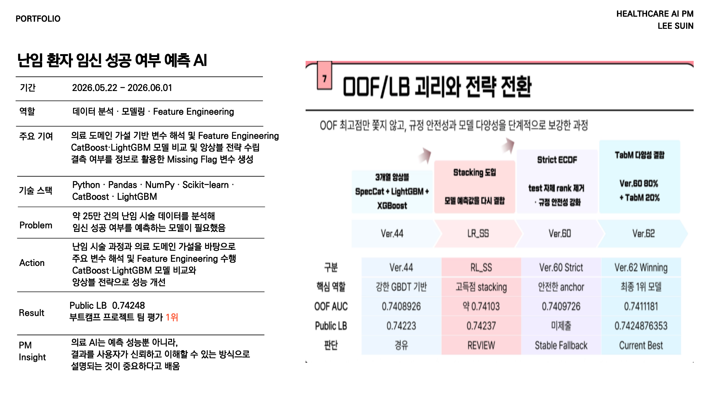

문제
난임 시술 데이터에는 결측과 범주형 변수가 많아 단순 모델링보다 시술 과정과 의료 도메인 가설을 함께 고려한 변수 해석이 필요했습니다.
실행
주요 변수를 해석하고 결측 여부를 정보로 활용하는 Missing Flag 변수를 생성했습니다. CatBoost와 LightGBM 모델을 비교하고 앙상블 전략으로 예측 성능을 개선했습니다.
기획 관점
의료 AI는 성능 점수뿐 아니라 결과를 사용자가 신뢰하고 이해할 수 있는 방식으로 설명되어야 합니다. 예측 근거와 한계를 함께 제공하는 제품 경험이 필요하다고 느꼈습니다.
